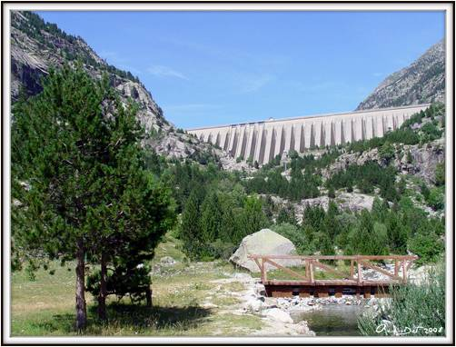
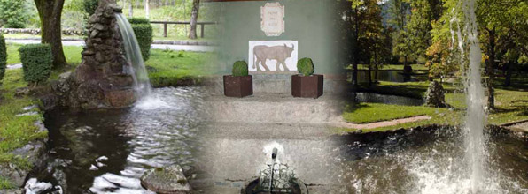
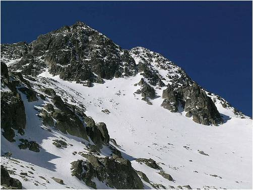
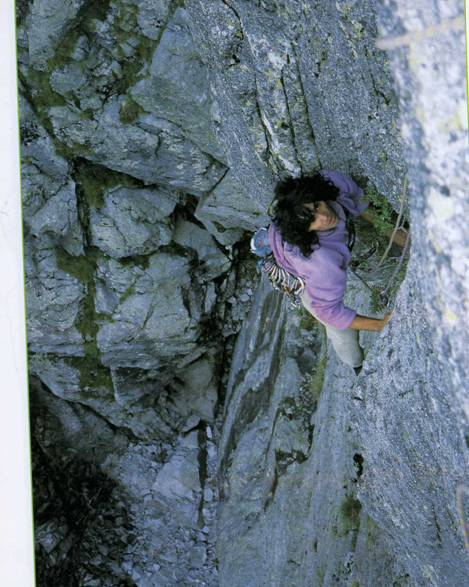
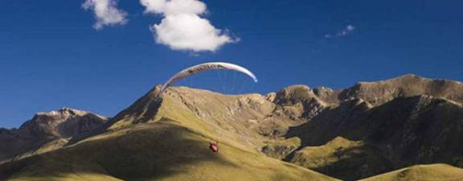

Welcome to ASIC 2011
The Tenth Annual Summer Interdisciplinary Conference, held at the Manantial Hotel, part of the Caldes de Boí Spa Resort in the Pyrenees of Spain, Thursday, July 7 – Tuesday, July 12, 2011.

The Cavallers dam and lake, a few km from the hotel.
The hotel is a few hours' driving time from Barcelona, in the highest and most remote part of the Spanish Pyrenees, at an altitude of about 1,500 m, in the midst of peaks rising to over 3,000 m, and very close to the Cavallers dam and lake. Many outdoor activities are easily accessible, including sport, mixed and traditional rock climbing, mountaineering, hiking, and rafting, all starting within a few km of the hotel. Breakfasts and dinners are taken at the hotel — there are no close alternatives.
ASIC 2011 occurs at a time allowing combined travel to attend two closely related meetings held in Boston, MA: the 2011 Annual Meetings of the Society for Mathematical Psychology, July 15–19, and the 2011 Annual Meetings of the Cognitive Science Society, July 20–23 — though there is also time to return home first before a trip to Boston. Many attendees will want to take the opportunity before or after ASIC to travel elsewhere in Spain, particularly Barcelona.
Richard M. Shiffrin of Indiana University – Bloomington is the organizer. Email correspondence should be directed to shiffrin@indiana.edu or mailed to Richard M. Shiffrin at Indiana University (see the Contact tab for the address).
About the conference
The subject matter of ASIC is interdisciplinary, within the broad frame of cognitive science. ASIC uses the successful format of previous ASIC and AIC conferences: days are free for leisure activities and discussions among participants, and talks and posters are in the later afternoon and early evening, followed by dinner. The conference is open to all interested parties, and an invitation is not needed to attend. Due to the small number of spots for speakers, the organizer selects the attendees who give talks; additional attendees have the opportunity to present posters.
Conference aims
The conference covers a wide range of subjects in cognitive science, including:
- modeling of cognition
- neuroscience, cognitive neuroscience
- psychology (including perception, psychophysics, attention, information processing, memory and cognition)
- computer science and artificial intelligence
- machine intelligence and learning
- methodology and statistics
- linguistics, psycholinguistics and computational linguistics
- philosophy of mind, cognitive science
Conference format
There is a single speaking session each day. If the number of participants exceeds the number of speaking slots (about 42), the first half session on a chosen day will be devoted to posters. The conference starts with registration and a reception from 15:30–16:15 on Thursday, July 7. On subsequent days (except a poster day) there are drinks and light snacks from about 16:00–16:15, followed by a session of seven spoken presentations including a mid-session drink break.
This format frees most of the day for discussions with colleagues or other activities with colleagues, family, and friends. The time frame allows day trips to nearby sites, but return should be arranged in time for the sessions.
Registration
You are not officially on the request list for presenting research (talks or posters) until you submit the registration fee, preferably by PayPal.
This fee pays for rental of the conference room, equipment rentals, snacks and drinks at conference breaks, the opening reception, and the banquet charges.
Fee schedule (US dollars)
| Payment window | By check or PayPal |
|---|---|
| Prior to Jan. 1, 2011 | $200 |
| Jan. 1 – March 1, 2011 | $250 |
| After March 1, 2011 | $300 |
In addition to the registration fee per person, you may purchase additional guest vouchers for other persons attending the opening reception and/or final banquet.
How to pay
- Online by PayPal (preferred).
- Send a check for the correct amount to ASIC 2011, c/o Richard M. Shiffrin, Psychology Dept., Indiana University, Bloomington, IN 47405.
Lodging
A block of rooms sufficient for our conference needs is held at the Manantial Hotel, Caldes de Boí Spa Resort, adjacent to the Parc Nacional d'Aigüestortes & Estany de Sant Maurici.

Hotel El Manantial (4-star), Caldes de Boí, Pyrenees.
Hotel website: caldesdeboi.com. The hotel has 4 floors with 3 single rooms, 66 double rooms, 8 family rooms, 8 junior suites and 7 suites. Rooms have Wi-Fi, bathroom, hairdryer, telephone, minibar/fridge, and central heating, with free outdoor parking. Guests have access to a bar, gardens, a public internet terminal, hot baths and spa, room and laundry services, one indoor and four outdoor swimming pools, a furnished sun terrace, a gym, and a sauna.
The resort is famous for hot springs of many types, pools and spa treatments — after a day adventuring in the mountains, and before the talks, it is a nice treat to take a hot mineral bath.
Rates
Lodging rates include breakfast and dinner for each person each day. Reservations should be made as early as possible starting in the fall of 2010.
- One person in a room (two twin beds or one queen): €120/day.
- Two persons in a room: €152/day.
Other larger rooms are available on request. Bookings can be made by email to aisasi@caldesdeboi.com.
Dining
The Caldes de Boí Spa Resort has several restaurants, and the staff will cater all breakfasts and dinners — there isn't time to drive to alternative restaurants.
Dining charges are included in the daily lodging fee. The registration fee pays for the food and drink at session breaks, the extra food and drink at the opening reception, and the conference banquet.
Each day the conference begins with light snacks and drinks at about 16:00–16:15, followed by talks, with a 15-minute break and more drinks about midway through (around 18:00). The first day of the conference, July 7, has a reception with wine, beer, and more elaborate snacks from 3:30–4:15. There is a rotating selection of food choices, including meat, fish, and vegetarian options.
Travel
Most participants will fly to Barcelona and rent a car to drive to the resort — about four hours.
Driving directions from Barcelona: take A2 (some toll roads) to exit 461 onto N230 north (bypassing Lleida to the north). Take N230 just past El Pont de Suert, then bear northeast on L-500 past Barruera, continuing on LV-5000 to Caldes de Boí. Google Maps provides good driving directions.
Flying to Barcelona
Flights from the US usually arrive in Barcelona in the early morning after an overnight flight. Return flights to the US leave no later than about 10:30–11:30 AM, arriving in the US by early afternoon. Many participants will want to spend a day or more in Barcelona before or after ASIC, or both.
A closer, smaller airport, Alguaire, is reachable via Paris, Milan, or London — the drive from there is about 1.5 hours. It's also possible to fly to a French airport near the Pyrenees and cross by car through tunnels; Toulouse, about 3.5 hours away, is one option.
Public transportation to the resort
Travel by public transportation from Barcelona to the resort is possible but complicated: a combination of taxi, train, and bus is needed to reach the town of Pont de Suert, from which a taxi covers the final stage (about 30 euro). Trains do not go to Pont de Suert; buses run five times a day (departures 6:45, 9:00, 14:15, 16:00, 20:45), taking four to five hours, with a return price of about 49 euro. The first stage — getting from the airport to the Barcelona Nord train/bus station — can be done by taxi (20–30 euro, 25–30 minutes) or by train/bus/metro combinations.
Useful links
- Bus travel throughout Spain: ALSA (alsa.es)
- Train travel in Spain: renfe.com
- Barcelona travel questions: barcelona-tourist-guide.com
Activities
The area around the Caldes de Boí Spa Resort and the adjacent Aigüestortes National Park offers many activities, from hiking and rock climbing to canyoning and mountain biking.

Refugio Ventosa and surround, about a two-hour hike from the hotel.
Hiking
There is a great deal of hiking in the area, from short scenic walks of 1–2 hours to multi-day treks. The hotel sits in a fairly deep valley (Val de Boí) that extends up to the Cavallers dam and lake; the Aigüestortes National Park is adjacent, just to the east. A renowned long-distance route, Carros del Foc, connects nine equipped refugios throughout the park (about 50 miles round trip with roughly 5,300 m of climbing and descending — not for a conference day).
Shorter hikes suitable for a return by 4 PM include Punta Alta (3,014 m, about 3.5–4 hours from the Cavallers dam), the walk to Refugio Ventosa (about two hours, 300 m climb, 6 km, with good views of Lake Negre and Lake Travessani), Aut Peak (about 4 hours up, 3.5 hours down, ~1,135 m climbing), and Estany Llong (a maintained 10.5 km trail along the river Nicholas, about 3.5 hours up).
Rock climbing

Sport and multi-pitch climbing near the Cavallers dam.
A few kilometers from the hotel is the Cavallers sport climbing area, surrounding the dam and lake of the same name — several hundred sport climbs across about seven sectors, mostly single-pitch but with a number of multi-pitch routes as well, all within a short walk of parking. Useful guidebooks include Pyrenees Rock by Andreas and Katrin Motset (English/German) and Roca Caliente en los Pirineos Cavallers by Luis Alfonso and Xavier Buxó (Spanish), which also covers the Travessani and Estany Llong areas.
ASIC usually arranges one or two group climbing days for everyone from beginners to experts.
Other activities

Parasailing is among the adventure options in the region.
Excellent mountain biking and road biking opportunities exist throughout the area. Canyoning, rafting, caving, parasailing, and via ferrata are also available — see the Catalonian Sporting website at rural-pyrenees-guide.com for more detail.
Sessions
A single speaking session is held each day, with seven talks per day, at the Caldes de Boí Spa Resort Conference Center, about 50 m from the Hotel Manantial.
The conference starts with registration and a reception at the Conference Center from 3:30–4:15 on Thursday, July 7. On subsequent days there are drinks and light snacks from 16:00–16:15, followed by a session of seven spoken presentations including a mid-session drink break; dinner follows the session. One dinner is the conference banquet.
Thursday, July 7
| 3:30–4:15 | Opening reception, Conference Room |
| 4:15–8:00 | Session — chair Dave Huber. Speakers: John Anderson (using neural imaging to uncover the sequential structure of thought); Flavia Filimon (perceptual decision making); Bob French (TRACX: a recognition-based connectionist framework for sequence segmentation); Stefan Herzog (blending cognitive processes within one mind); Dave Huber (transitions from positive to negative short-term word priming); Matt Jones (the role of attention in motor control); Louis Narens (Steven's methods of magnitude estimation and production). |
| 8:15 | Dinner |
Friday, July 8
| 4:00–8:00 | Session — chair Marco Zorzi. Speakers: Michael Dougherty (tools to theories and back again); Bill Ramsey (properly understanding dynamicism in cognitive science); Lynne Reder (familiarity of elements affects knowledge formation); Joachim Steil (proto-objects in a TVA-based computational model of visual attention); Nachum Ulanovsky (neural codes for space in the hippocampus and entorhinal cortex of bats); Michael Wierzchoń (comparing measures of consciousness in artificial grammar learning); Marco Zorzi (emergence of a "visual number sense" in hierarchical generative models). |
| 8:15 | Dinner |
Saturday, July 9
| 4:00–8:15 | Session — chair Rene Zeelenberg. Speakers: Stéphanie Chambaron-Ginhac (impact of retention interval on implicit food memory); Patricia Cheng (applying causal learning to mathematics education); Chris Donkin (the structure of short-term memory scanning); Drew Hendrickson (is categorical perception really verbally mediated perception?); Jared Hotaling (planning in multi-stage risky decision-making); Shaw Ketels (attentional focus and the learning of a complex motor task); Ben Murdock (trial and error learning); David Neville (subliminal processing in long-term memory); Adam Sanborn (a rational model of intuitive dynamics); Rene Zeelenberg (study time distribution, learning and retention). |
| 8:30 | Dinner |
Sunday, July 10
| 4:00–8:00 | Session — chair Rosie Cowell. Speakers: Rosie Cowell (what is the blood oxygenation level dependent signal?); Thomas Hills (modeling executive processing in information search); George Sperling (measuring the spatial resolution and cognitive capacity of visual selective attention); Richard Shiffrin (a dynamic activation model for accuracy and response time in recognition memory); Greg Cox (modeling recognition of different stimulus classes with a dynamic activation model); Vladimir Sloutsky (selective attention and categorization: what develops?); E.J. Wagenmakers (a Bayesian test for the "hot hand" phenomenon). |
| 8:15 | Dinner |
Monday, July 11
| 4:00–8:00 | Session — chair Eddy Davelaar. Speakers: Eddy Davelaar (serial recall in SAM); John Dunn (feedback delay and feedback type on perceptual category learning); Birte Forstmann (neural correlates of trial-to-trial fluctuations in response caution); Stephan Lewandowsky (SOB-CS: an interference model of complex span); Jonathan Nelson (optimality, heuristics, and children's sequential information search); Shimon Ullman (detecting hands: combining learning with innate concepts); Johannes Ziegler (how to say "no" to a nonword). |
| 8:15 | Dinner |
Tuesday, July 12
| 4:00–8:00 | Session — chair Brad Love. Speakers: Mirjam Jenny (conjunctive probability assessment from experience with weighted averaging); Brad Love (forecasting and classification using absolute and rate information); Klaus Oberauer (evidence against decay in verbal working memory); Giovanni Pezzulo (action understanding through the reuse of one's own skills); Michael Ramscar (the evolution of noun classification in two Germanic languages); Roger Ratcliff (speed of processing and individual differences); Christoph Weidemann (beyond confidence ratings: how can cognitive states be assessed?). |
| 8:15 | Dinner |
Contact
Email is preferred for all correspondence.
Conference organizer
Rich Shiffrin
Indiana University – Bloomington
shiffrin@indiana.edu
Tel: 812-855-4972 · Fax: 812-855-9871
Address correspondence to
Annual Summer Interdisciplinary Conference (ASIC 2011)
c/o Prof. Richard Shiffrin, Psychology Department
Indiana University, 1101 E. 10th St., Bloomington, IN 47405
Webmaster / conference coordinator
Please direct questions concerning the website to:
Ruth Eberle
Indiana University – Bloomington
reberle@indiana.edu
Muhammad Nubli Mohd Kasa
Indiana University – Bloomington